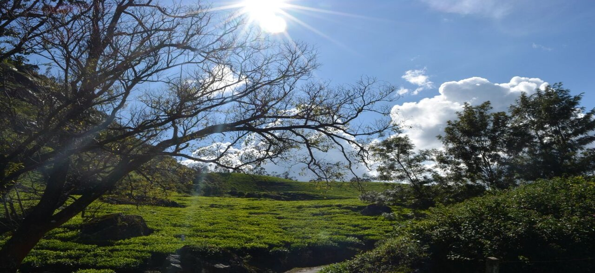
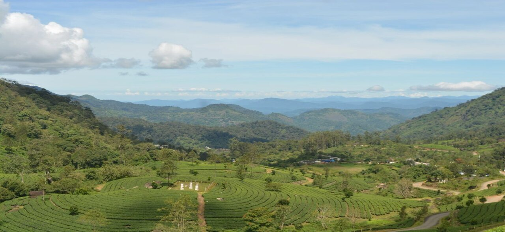
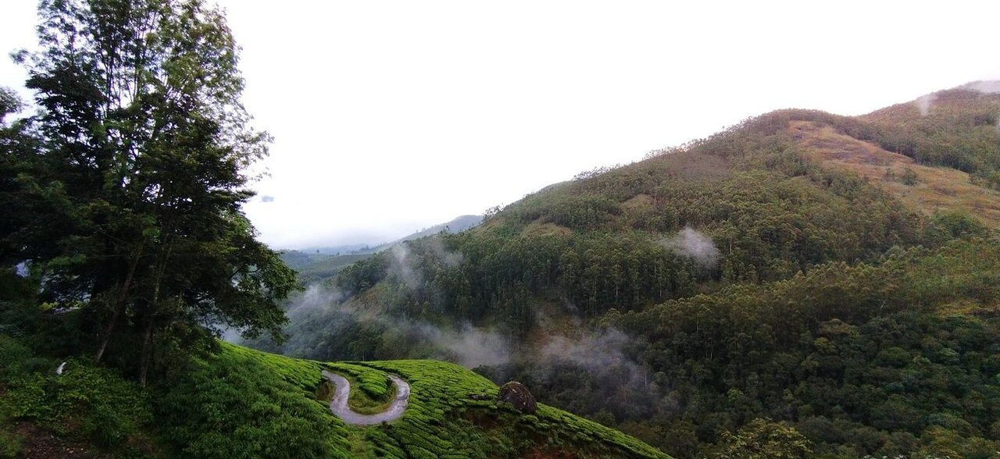
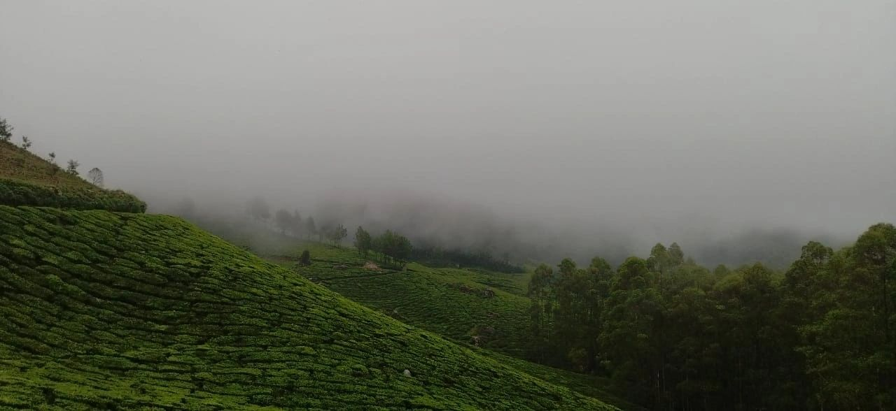
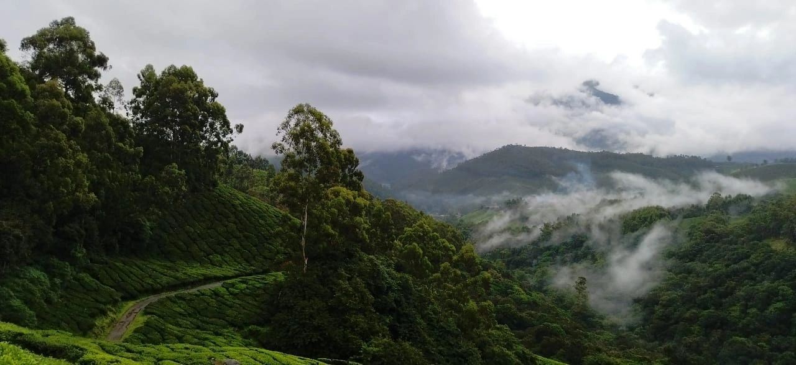
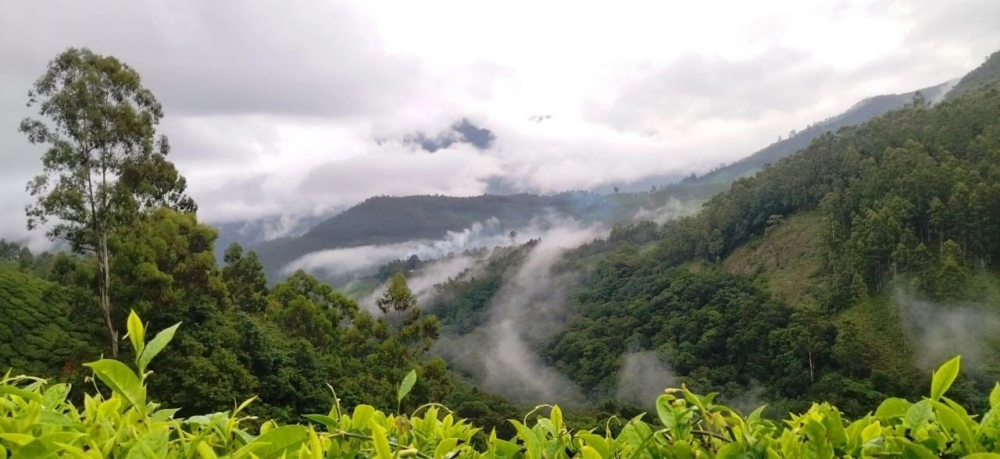

Southerly Hills is the range of hills at the southern end of Western Ghats, that
upkeep the
traditional natural
farming practices that are ecological whilst simultaneously creating multiple opportunities for
jobs, daily
wages and even subsidiary entrepreneurship for the local populous. For many generations, Southerly
Hills is
producing a wide range of spices and herbs like Cardamom, Pepper, Coffee and Rosemary. Apart from
the whole
spices, we value-add and extract them to oils, powders and Oleoresins.
After Saffron and Vanilla, Cardamom is the third most expensive spice. It is the most common
ingredient as a
spice and flavoring for food and liqueurs and in medicine. Cardamom production's demand and supply
patterns
of
trade are influenced by price movements, nationally and internationally, in monthly cycles.
Southerly Hills
stands apart from their peers and counterparts as our cardamom comes directly from the farmers and
not
through
the hands of middlemen. The industry is highly labor-intensive, and each hectare requires a high
degree of
maintenance throughout the year.
We welcome our buyers, clients and even tourists to visit and stay at these hills with us to feel
nature and
to
enjoy the cold breeze with the rejuvenating scent of spices.
Cardamom is the dried ripe fruit referred as the “Queen of Spices” because of its very pleasant aroma and taste. Indian cardamom is offered to the international markets in different grades.
Since centuries Kerala is a source of high quality pepper. Southerly Hills delivers you the most sought-after varieties of Black Pepper grown in the green fertile rich land of Kerala.
Idukki Golds’ Roasted Coffee Beans is a product made by carefully picking, drying, and roasting Robusta beans. Having a good amount of caffeine as well as antioxidants, Robusta beans are a coffee lover’s delight!
The plantations is blessed with exotic varieties of Avocado, Strawberries, Blackberries, Plums, Tamarillos and Oranges. All fruits are grown organically without even using the approved fertilizers or pesticides.
We grow organic vegetables with the support of seasoned farmers and labors. Vegetables such as Broccoli, Lettuce, Chinese Cabbage, Butter Beans, radish and many other greens and herbs can also be found here.
Southerly Spices offered prices are at times, even lower than the origin because of our vast know-how about the Cardamom cultivation and trading since generations. The global demand and supply scenario is observed by our professional research team and regular visits to observe the changes in the main Producing and Cultivation areas of Munnar - Kerala. All these determination and diligence, sincere efforts, prompt decisions and Cash Liquidity allows us to commence timely harvest and procurement of Best Quality Cardamom in huge bulk quantity to be processed at our facilities
Send us a message with any questions or concerns, and
we'll get back to
you with answers as soon as we can.
1A,Serene Valley Apartments, Serene Valley Road Opposite CSEZ,
Kakkanad
Vazhakal, Kerala 682039
Copyright Ⓒ 2022 Southerly Hills - All Rights Reserved.